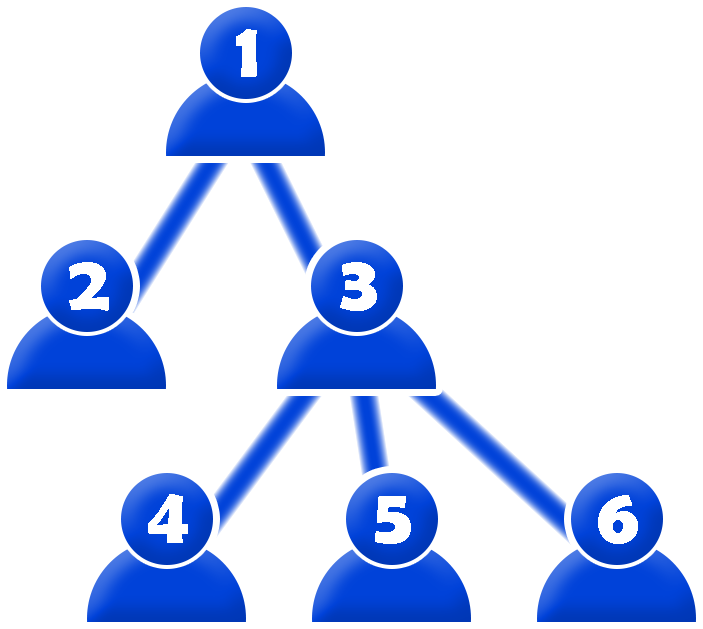

Apart from being the largest city in Indonesia, Jakarta is also home to the Indonesia's central government. Pak Dengklek would like to research the structure of the central government.
There are $N$ members of the central government cabinet, numbered from $1$ to $N$. For each member $i$ ($2 \leq i \leq N$), he/she is a direct subordinate of member $P_i$ ($1 \leq P_i \leq i - 1$). Note that member $1$ is not a subordinate of anyone. Let $b(i)$ denote the number of direct subordinates of member $i$.
For a proposal that is being discussed, each member must vote to either agree or disagree. However, as per the cabinet rules, for each member $i$, exactly $D_i$ ($0 \leq D_i \leq b(i)$) of his/her direct subordinates must cast a different vote than member $i$.
Each member $i$ has a influence level $W_i$. For some voting result by all members, let the dominance value be the difference between the sum of influence levels of the members that agree and the sum of influence levels of the members that disagree. Pak Dengklek would like to know the maximum possible dominance value. Help Pak Dengklek calculate it!
The input is given in the following format:
N P2 P3 … PN W1 W2 W3 … WN D1 D2 D3 … DN
Output an integer representing the maximum possible dominance value.
6 1 1 3 3 3 5 3 2 4 1 6 1 0 2 0 0 0
15
The following is an illustration of the structure of the central government cabinet members.

One possible voting result that yields the maximum dominance value is when members $1$, $2$, $4$, and $6$ agree, while members $3$ and $5$ disagree. This result is valid since:
The dominance value is the difference between $W_1 + W_2 + W_4 + W_6 = 5 + 3 + 4 + 6 = 18$ and $W_3 + W_5 = 2 + 1 = 3$, which is $15$.
3 1 1 2 6 5 0 0 0
13
The following is an illustration of the structure of the central government cabinet members.
One possible voting result that yields the maximum dominance value is when all members disagree. The dominance value is $13$.